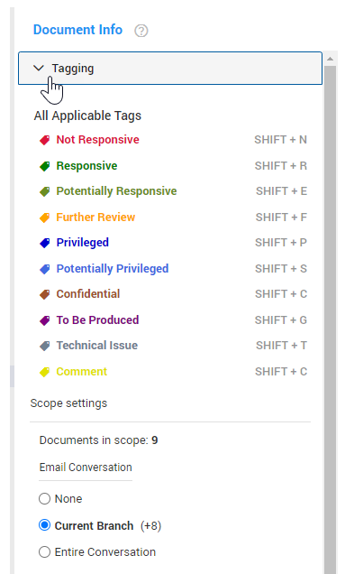
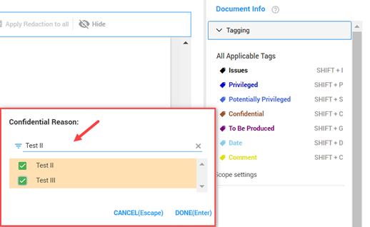
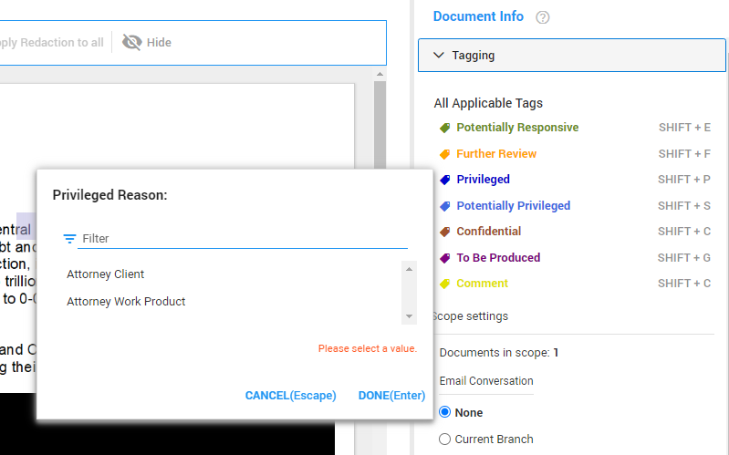

Apply tags to filter, sort, and retrieve documents.
When you tag a document, you add a piece of information that defines the contents of the document. Depending on the permissions you have received, you may not be able to use all tags.
For more information on how to create tags, see
If you want to apply tags to a group of documents at once, see Bulk Tagging.
To apply a tag to a document:
With the document open, expand the Tagging section in the right pane.

Before you apply a tag, first configure Scope Settings. The Scope Settings determine target documents when adding or removing a tag.
To view options, click
Documents in Scope
Number of involved documents, based on settings of Email Conversation, Document Family and/or Duplicates.
Email Conversation
The Email Conversation section under Scope Settings allows you to define what documents to tag in an email thread.
None: Only the email currently open in Document View will be (un)tagged.
Current Branch: The email currently open in Document View plus all emails up in the reply/forward chain and all emails down in the reply chain (replies to this email, replies to those replies, etc.) will be (un)tagged.
Entire Conversation: All emails in the email thread will be (un)tagged.
Document Family
You can tag document family members and attachments in the Family section under Scope Settings. Define how family documents should be tagged.
None: Only the document currently open in Document View will be (un)tagged.
Children: The document currently open in Document View plus all children (attachments, images, etc.) will be (un)tagged.
Entire Family: All documents in the Document Family will be (un)tagged.
Duplicates
When there are multiple copies of the selected document, the Duplicates section will display under Scope Settings. Define how duplicates should be tagged.
None: Only the document/email currently open in Document View will be (un)tagged.
All Duplicates: The document/email currently open in Document View plus all duplicates will be (un)tagged.
Once you have determined your scope, select any applicable tags.
|
|
Tip: You can save time by using the shortcuts listed next to the tags. Use the shortcut T to tag a new document with the same tags applied to the previous document. |
Based on configuration settings, certain tags may require additional interaction from the reviewer. In these cases, the reviewer may be prompted to select pre-defined values associated with a tag, or else to create their own.
|
|
Tip: For long lists, filter for the needed value by typing the value name into the search field.  |
In the example below, the user has selected the Privileged tag, and now must choose an additional value (Attorney Client or Attorney Work Product).

Once selected, the tag is applied to all documents included in the scope.